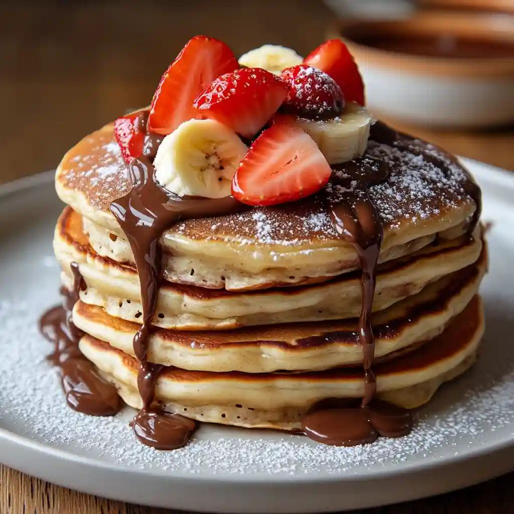
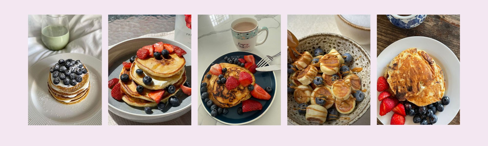

Gluten-free recipes, quick and easy for your friends & family
BANANA PANCAKES, fluffy and gluten-free 🥞

Ingredients and portions needed for 4 pancakes
- 3 cups of gluten-free flour (corn or rice)
- 2 eggs
- 1 banana
- 1 tablespoon of gluten-free baking powder
- 1 tablespoon of olive or cooking oil
Utencils needed
- A bowl
- A spoon
- A measuring cup
- A pan
- A stove
6 easy steps for your new favorite pancake recipe
- Smash your banana and mix it into a purée
- Add the flour and baking powder
- Once mixed, add the eggs
- Mix the ingredients together, you should have a smooth texture
- Once your mix is ready, oil your pan to avoid burning
- Heat your pan moderately , pour the dough to cook it 4 minutes per side!
Enjoy your delicious & homemade pancakes!!
Share your results with us ;)

Follow us on socials for weekly content :)